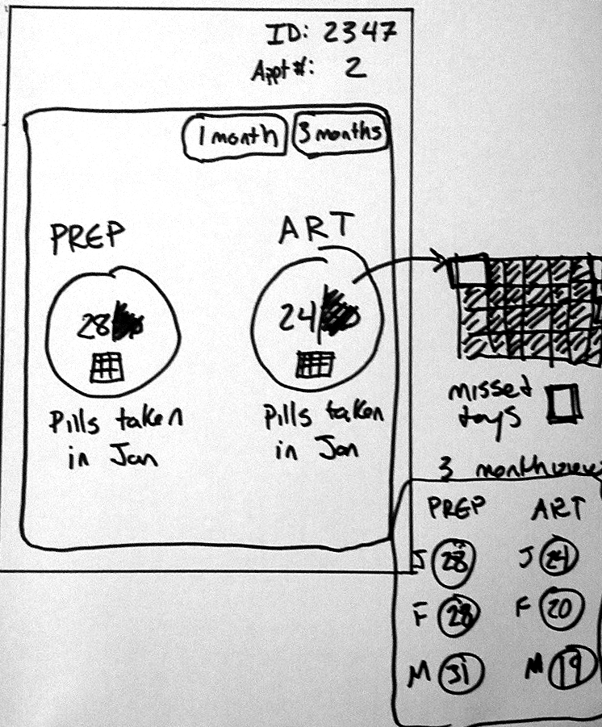

Project Summary
Incloodle is an iPad app that was designed and developed by Kiley Sobel and Kyle Rector at the University of Washington to support children with and without disabilities with inclusion during play. I joined their team to conduct usability studies, evaluate the app, and contribute to the research report presented at the 2016 ACM Conference on Human Factors in Computing Systems (CHI) conference.

- 


Problem Space
Incloodle is an iPad app designed to allow two children to play inclusively together, focusing on social and emotional learning between the children. Together, the children take pictures of themselves, or other objects guided by the app.
Four versions of the app were designed to evaluate the effectiveness of different strategies to encourage play among children. Two of the versions used tech-enforcement, requiring the children's faces to be in the picture and two of the versions used character-based prompting, in which a human-like character shared information about themselves. Each version is detailed below.
- Tech-enforcement with basic prompting
- Tech-enforcement with character-based prompting
- No Tech-enforcement with basic prompting
- No tech-enforcement with character based prompting
How might we design an app to support inclusion among children with and without disabilities?
Process
Before the usability studies were conducted a definition of successful inclusive play with Incloodle was developed which included (1) the technology supports the children in development of play skills (2) the technology fosters acceptance and positive attitudes among children (3) parents are pleased with their children's play experience.
We conducted a mixed-methods 2x2 within-subjects laboratory study in a large classroom space. We created a central play area, as well as two smaller areas to ask each child questions between each session.The children participated in pairs, having a chance to interact with each version of the app. After playing with each version the children were brought to different corners of the room to answer questions about their experience. During the entire study parents were in the room and also recorded their thoughts and observations about the different versions of the app. I conducted 4 studies, directly interacting with the children, and observed 4 studies, taking detailed notes.
After the studies were conducted, we compiled all of our notes. We then each coded the same two videos and compared and discussed our results to make sure we were performing the coding without bias, we then performed the rest of the video coding.
When it came to reporting our findings I served as an editor.
Results
We learned through our laboratory study that technology-enforced cooperation was helpful but character-based promoting had little effect.
Title
Incloodle
Date
Jul 2016 - Sep 2016
Links
Tasks
- User Research
- Data Analysis
- Research Writing